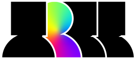

ABOUT US
A “Four O’ Square” foi criada em 2021 nas Picoas, em Lisboa, por um aluno do curso profissional de Técnico de Design de Comunicação Gráfica, da Escola Profissional de Artes, Tecnologias e Desporto (EPAD). Pretendemos ser uma referência em inovação no design e na comunicação, dando primazia à originalidade e diferenciação para oferecer soluções personalizadas, adequadas às necessidades específicas de cada cliente. Na “Four O´ Square” fomentamos a liberdade de expressão, desde a conceção à interpretação, sempre com o objetivo de salientar a diferença pela positiva e valorizar o pensamento “fora da caixa”. É precisamente este mote “fora da caixa” que inspirou a criação da “Four O’ Square” e as características da sua identidade. A empresa ambiciona adotar uma forma de ser e estar muito próprias, sempre à frente do seu tempo, com novas perspetivas de interpretar a realidade. É com esta ambição constante da busca pela diferença que a “Four O’ Square” encontra a sua natureza e o seu espaço. A nossa missão é atribuir personalidade às ideias dos clientes de forma inovadora, criativa e atrativa, através do caráter disruptivo do design/grafismos, captando a atenção pela diferença positiva da comunicação que “queima a retina e prende os olhos”, criando experiências memoráveis e impactantes.
